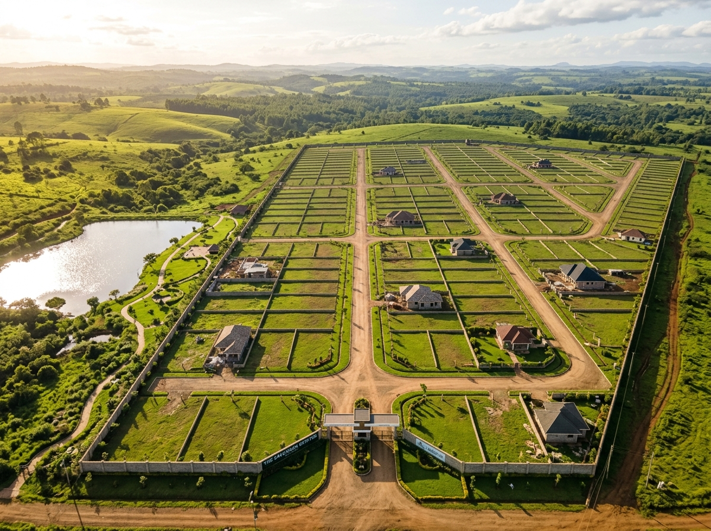

Kenya's real estate market continues to shift outward from Nairobi's core into a ring of satellite towns, driven by improved road infrastructure, rising urban population and buyers looking for more land for their money. Here is what we are seeing across the market heading into the second half of 2026, and what it means for anyone buying land or property today.
Several towns within commuting distance of Nairobi continue to see the strongest demand and price growth:
These corridors share common drivers: improved road access, proximity to Nairobi's job market, and relatively lower entry prices compared to buying within the city itself.
Security, shared amenities and predictable neighbourhood standards continue to push buyers toward gated developments rather than standalone plots in open areas. Buyers increasingly value perimeter security, controlled access, communal green spaces and consistent building standards across a development — factors that also support stronger long-term resale value. Developers have responded by structuring more mid-sized gated communities (20–200 units) rather than only large master-planned estates, making the model accessible to a broader range of buyers.
Especially in fast-growing towns, developers are increasingly combining residential, retail and light commercial space within a single development. This mixed-use approach reduces the need for residents to travel for everyday shopping and services, and it improves a development's income potential for investors who want rental commercial units alongside residential plots or apartments. Expect this trend to accelerate in corridor towns as populations grow dense enough to support ground-floor retail.
While figures vary by exact location and proximity to tarmac roads, broad annual appreciation trends in 2025–2026 have looked roughly like this:
As always, appreciation is uneven even within the same town — parcels closer to tarmac roads, schools and planned infrastructure consistently outperform those further off the beaten path.
"Buyers who focus on infrastructure trajectory — where the next road, school or water project is headed — tend to outperform those who simply follow current price levels."
Looking ahead, we expect the following themes to define the Kenyan property market through the rest of 2026 and into 2027:
For buyers and investors, the fundamentals remain consistent: verified title, strong location fundamentals (roads, water, proximity to growth nodes) and a trusted seller with a transparent track record continue to matter more than short-term price movements. Landplan.co.ke tracks these corridor trends closely across our land listings, so our clients can buy ahead of the curve rather than after prices have already run up.